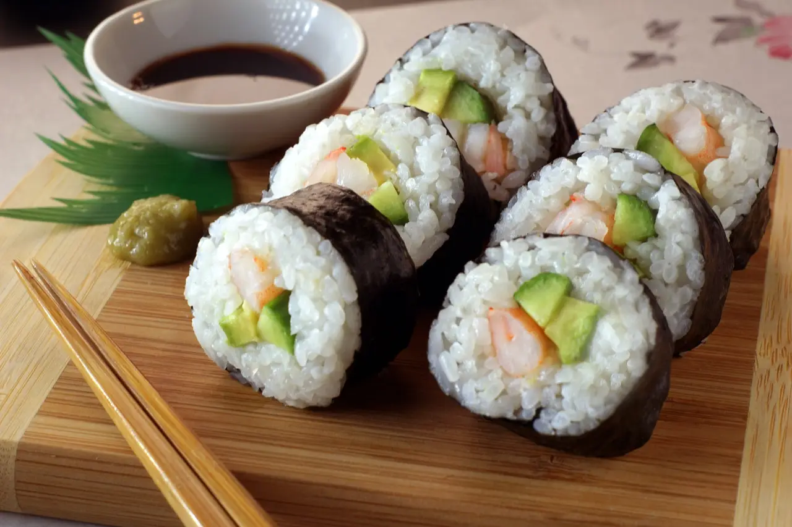

Sushi Japonés
Tiempo: 45 min | Dificultad: Media
Ingredientes:
- Arroz para sushi
- Alga nori
- Pescado fresco (salmón o atún)
- Vinagre de arroz
Preparación:
- Cocer el arroz y sazonar con vinagre de arroz.
- Colocar el alga nori sobre una esterilla.
- Añadir arroz y pescado, enrollar y cortar.